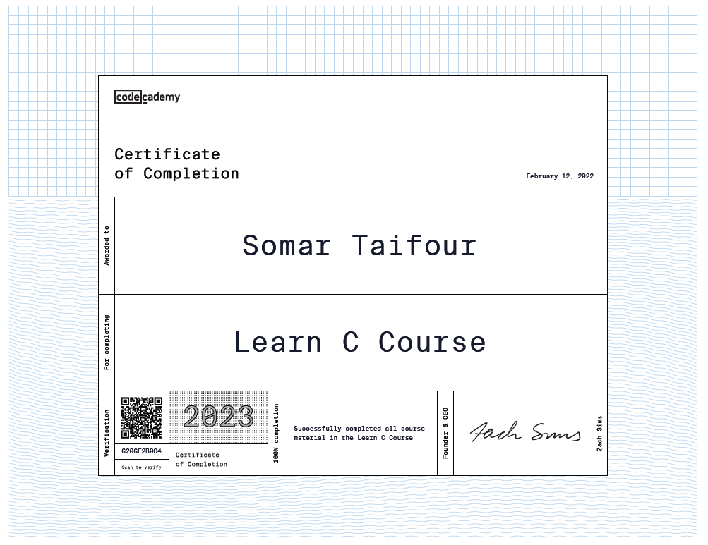
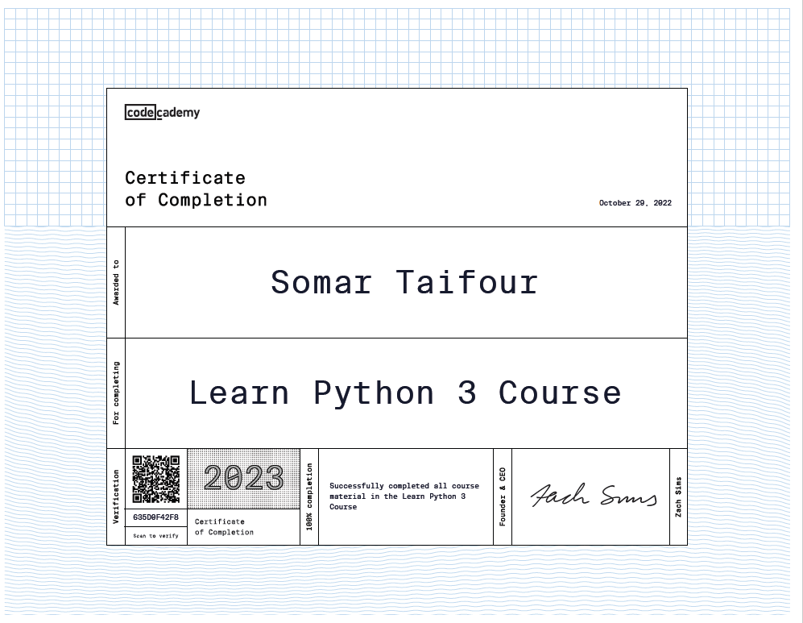
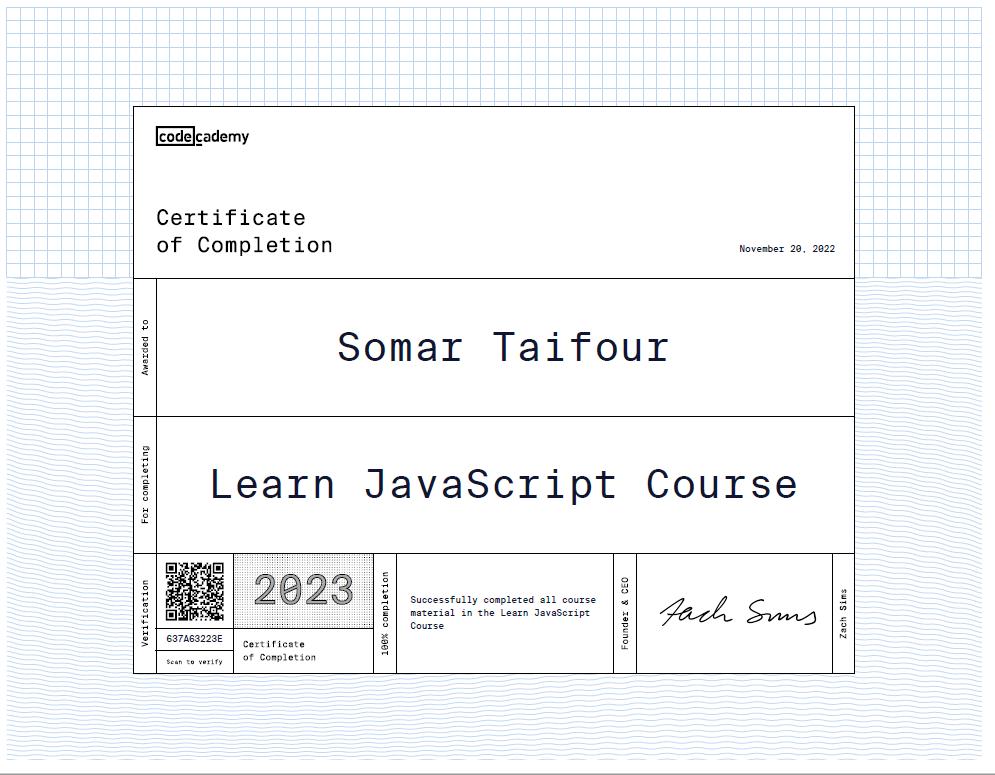
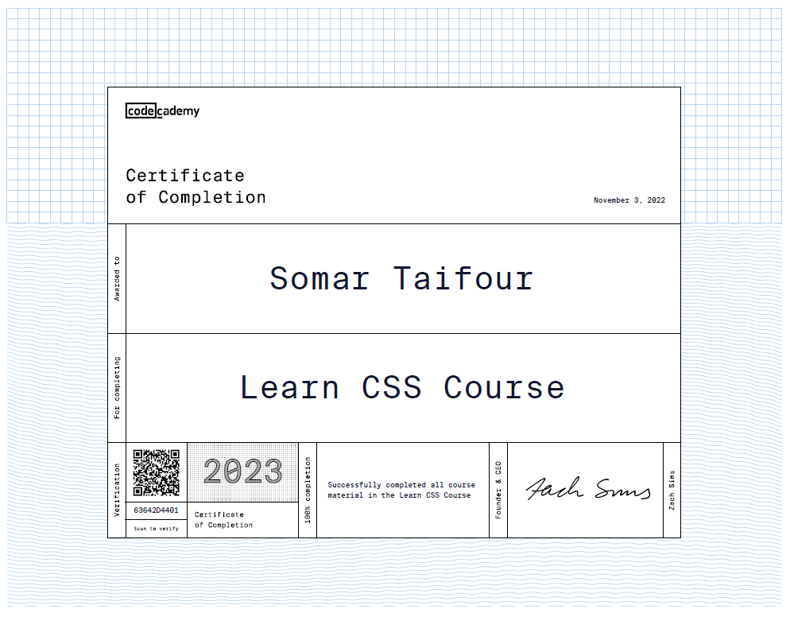
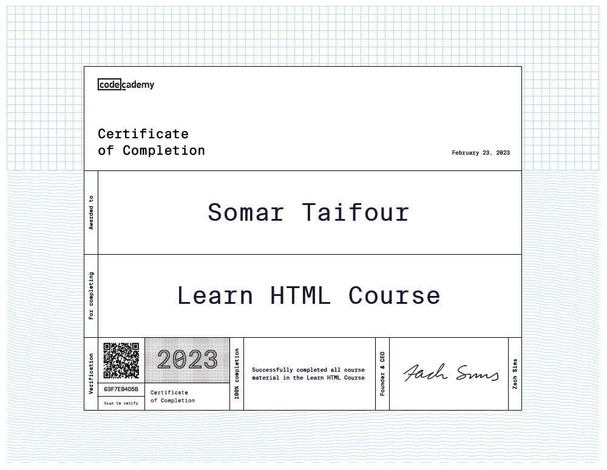
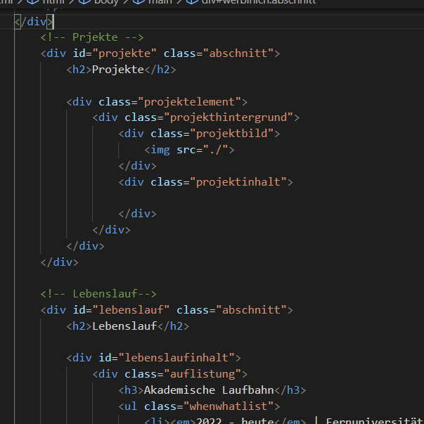
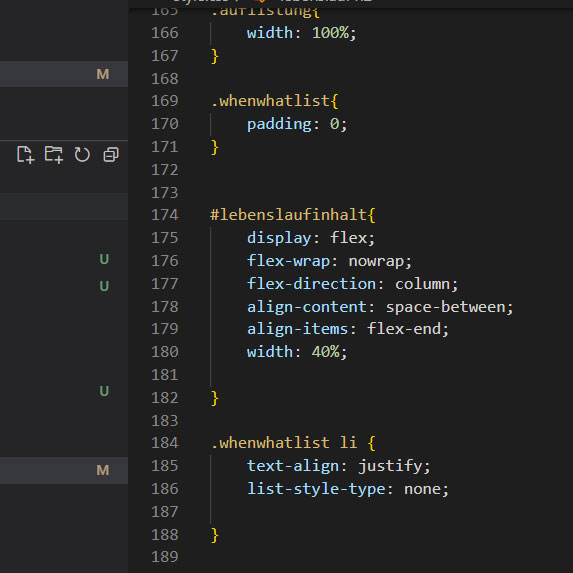

Wer bin Ich?
Willkommen auf meiner Webseite! Hier zeige ich meine Projekte, teile Erfahrungen und berichte über meine Fortschritte in Informatik und IT-Sicherheit. Mein Interesse gilt der Informatik, Cybersecurity und allem, was sichere digitale Systeme ausmacht. Besonders fasziniert mich, wie Kryptografie, Software, Netzwerke und Sicherheit ineinandergreifen – und wie man Systeme besser verstehen, schützen und optimieren kann.
Projekte

Bachelorarbeit: Post-Quanten-Kryptografie auf IoT
Effizienzvergleich der PQC-KEMs ML-KEM und HQC auf Arm Cortex-M33 und RISC-V Hazard3 des RP2350 – bewertet mit der Note 1,3.
Mehr erfahren →Fachpraktikum IT-Sicherheit, IT-Forensik & Datenschutz
Gruppenarbeit: Entwicklung eines eigenen DoH-Tunnels mit Java-Client-Server-Architektur und DNS-TXT-Datenübertragung über einen DoH-Resolver auf Microsoft Azure.
Mehr erfahren →Lebenslauf
Akademische Laufbahn
- 04/2022 - voraus. 10/2026 | Fernuniversität in Hagen : B.Sc. Informatik, Schwerpunkt Cybersecurity (Sicherheit im Internet, Mobile Security, Informations- und Codierungstheorie, Verteilte Systeme, Seminar IT-Sicherheit)
- 2012 - 2014 | Nationale Universität für Architektur und Bauwesen Armeniens, Erevan : Master der Architektur
- 2005 - 2010 | Albaath Universität, Homs : Bachelor der Architektur
Praktika
- 04/2025 - 08/2025 | Fernuni Hagen, Hagen : Fachpraktikum IT-Sicherheit, IT-Forensik und Datenschutz (Details)
- 04/2023 - 08/2023 | Fernuni Hagen, Hagen : Grundpraktikum Programmierung – Java-Backtracking-Algorithmus zur algorithmischen Problemlösung ("Schlangenjagd")
Berufliche Laufbahn
- September 2023 - Heute | SSP AG Architekten Ingenieure Integrale Planung, Bochum BIM Administrator
- März 2019 - August 2023 | Rübsamen + Partner Architekturbüro, Bochum Architekt, Leistungsphasen 1-5
- März 2016 - Februar 2019 | Lepel & Lepel Architektur, Köln Architekt, Leistungsphasen 1-5
Weiterbildung
- Fernuni Hagen: Zertifikat Technische Informatik, Schwerpunkt Sicherheit im Internet
- TryHackMe: Top 3 % – Jr. Penetration Tester, Web Fundamentals, Cyber Security 101, Complete Beginner
Skills
- Security & Netzwerkanalyse | Wireshark - Nmap - tcpdump - Linux (Kali/Ubuntu)
- Programmiersprachen | Java (OOP, Maven, JUnit) - Python - C - JavaScript - HTML - CSS
- Datenbanken | SQLite - PostgreSQL
- Tools | Git - VirtualBox - LaTeX - VS Code
- Office & Projektmanagement | MS Word - Excel - PowerPoint - MS Project - OneNote
- Architektur / BIM (aus früherer Laufbahn) | BIM - Revit - Solibri - ArchiCAD - Vectorworks - CAD - 3ds Max - Adobe Photoshop
- Sprachen | Deutsch (verhandlungssicher) - Englisch (verhandlungssicher) - Arabisch
- Persönliche Skills | Problemlösungsorientiert - Analytisches Denken - Teamfähig - Eigeninitiativ
- Hobbys | Programmieren - CTF - Puzzles - Lesen - Reisen - Krafttraining
Zertifikate





Blog

Erste Blog Eingabe
hier schreibe ich über Sachen!

Zweite Blog Eingabe
hier schreibe ich auch aber über ganz andere Sachen!
Kontakt
Haben Sie ein interessantes Projekt, an dem wir gemeinsam arbeiten können? Dann können Sie mich auf folgenden Kanälen kontaktieren: